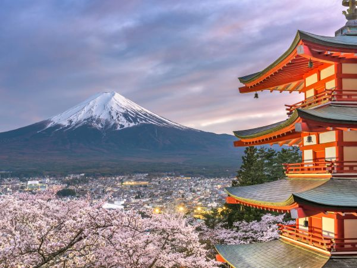
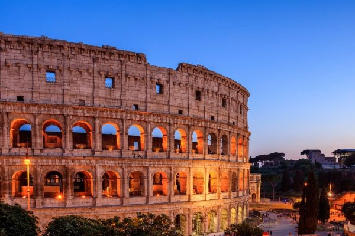
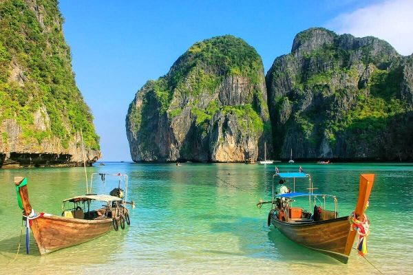
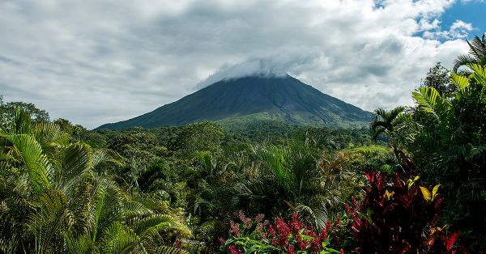

Imaginar acordar num local onde o dia começa entre templos milenares, praias de água cristalina ou o espetáculo de uma aurora boreal é o primeiro passo para uma viagem inesquecível. Mais do que uma simples mudança de cenário, viajar é uma oportunidade de renovar perspetivas e acumular memórias marcantes. Este guia reúne cinco destinos extraordinários pensados para inspirar a próxima grande aventura.
Uma combinação perfeita entre tradições passadas de gerações em gerações e modernidade futurista. É um dos países mais seguros do mundo, com uma rede de transportes impecável e uma hospitalidade lendária (Omotenashi).
o que explorar
Tóquio: É o lugar ideal para se perder entre arranha-céus futuristas e santuários xintoístas pacíficos no mesmo day. O histórico distrito de Asakusa com o templo Sensō-ji, o cruzamento movimentado e os miradouros modernos de Shibuya (como o Shibuya Sky), e o paraíso da cultura pop e tecnologia em Akihabara.
Quioto: Reserve tempo para visitar os templos zen e provar a refinada culinária tradicional (kaiseki). Milhares de portões torii vermelhos no santuário Fushimi Inari-taisha, a famosa floresta de bambu de Arashiyama, e os tradicionais bairros de gueixas, como Gion.
Osaka: Experimente pratos locais imperdíveis como o takoyaki (bolinhos de polvo) e o okonomiyaki (panqueca japonesa). O animado canal de Dotonbori repleto de luzes neon e letreiros icônicos, o histórico Castelo de Osaka e o parque temático Universal Studios Japan (com a área do Super Nintendo World).
Monte Fuji: Se preferir não escalar o vulcão (atividade restrita aos meses de verão e fisicamente exigente), pode admirá-lo de longe em cruzeiros pelos lagos ou de teleféricos locais. Vistas panorâmicas incríveis a partir da região dos Cinco Lagos de Fuji ou da estância de Hakone.

Itália
Um destino rico em história, património artístico mundial e uma das gastronomias mais celebradas do planeta.
o que explorar
Roma: É o lugar ideal para caminhar sem pressa, descobrindo praças históricas e desfrutando de uma autêntica pasta alla carbonara. O imponente Coliseu e o Fórum Romano, o Panteão incrivelmente preservado, a icónica Fonte de Trevi e a Cidade do Vaticano (com a Basílica de São Pedro e a Capela Sistina).
Florença: Usa a cidade como base para explorar as colinas e aldeias medievais da Toscânia, como Siena e San Gimignano. A impressionante Catedral de Santa Maria del Fiore (Duomo), a Galeria Uffizi (com obras de Botticelli e Da Vinci), a Ponte Vecchio e o miradouro da Piazzale Michelangelo.
Veneza: Explora também as ilhas vizinhas de Murano (famosa pelo fabrico de vidro) e Burano (conhecida pelas suas casas coloridas). A Praça e Basílica de São Marcos, o Palácio dos Doges, a Ponte de Rialto e os passeios de gôndola pelo Grande Canal.
Millão: Daqui estás a uma curta viagem de comboio do deslumbrante Lago de Como e das suas vilas elegantes. O magnífico Duomo de Milão (com hipótese de subir ao telhado para uma vista incrível), a Galleria Vittorio Emanuele II e o mosteiro onde podes ver a pintura A Última Ceia de Leonardo da Vinci.

Tailândia
Praias paradisíacas de água cristalina, cultura acolhedora, templos impressionantes e uma excelente relação qualidade/preço.
o que explorar
Bangkok: Faz um passeio de barco pelo rio Chao Phraya ao fim da tarde e experimenta o autêntico Pad Thai numa banca de rua. O Grande Palácio Real, os templos icónicos Wat Phra Kaew (Buda de Esmeralda), Wat Pho (Buda Reclinado) e Wat Arun, além dos movimentados mercados de rua e mercados flutuantes.
Chiang Mai: É a região ideal para visitar santuários éticos de elefantes e fazer caminhadas pela natureza e aldeias locais. O templo Wat Phra That Doi Suthep no topo da montanha, a antiga cidade murada com dezenas de templos históricos e os famosos mercados noturnos de artesanato.
Phuken: É um excelente ponto de partida para excursões de barco até às ilhas vizinhas, como as famosas Ilhas Similan. A estátua do Grande Buda, o centro histórico com arquitetura sino-portuguesa (Old Phuket Town) e praias icónicas como Kata, Karon e Freedom Beach.
Krabi: Ideal para quem procura praticar mergulho, snorkeling, passeios de caiaque ou escalada nas falésias. A praia de Railay Beach (acessível apenas de barco), a baía de Maya Bay nas Ilhas Koh Phi Phi e a paradisíaca Bamboo Island.

Costa Rica
Um dos melhores destinos de ecoturismo do mundo, ideal para amantes da natureza, biodiversidade e aventura.
o que explorar
San José: Serve como excelente ponto de partida para visitar vulcões próximos, como o Vulcão Poás e o Vulcão Irazú. O histórico Teatro Nacional de Costa Rica, o Museu do Ouro Pré-Colombiano e o movimentado Mercado Central.
La Fortuna: Relaxa nas termas naturais aquecidas pelo vulcão e aproveita para fazer caminhadas ou circuitos de arborismo (canopy) no meio da floresta. O majestoso Vulcão Arenal, a Catarata La Fortuna e as pontes suspensas na selva.
Manuel Antonio: Reserva o teu bilhete com antecedência, pois o número diário de visitantes ao parque é limitado para preservar a fauna local. Trilhos na selva onde é fácil avistar preguiças, macacos-capuchinhos, tucanos e iguanas, terminando em praias paradisíacas.
Monteverde: Faz um passeio noturno guiado para descobrir a vida selvagem que só desperta após o pôr do sol. Trilhos pelas florestas de montanha, observação de aves (como o raro Quetzal) e passeios pelas copas das árvores.

Noruega
Paisagens naturais impressionantes, fiordes profundos, tranquilidade e a possibilidade de ver fenómenos naturais únicos.
o que explorar
Oslo: É uma cidade fantástica para explorar a pé ou de bicicleta, combinando arquitetura vanguardista com espaços verdes tranquilos. O Museu do Barco Viking, a icónica Ópera de Oslo (onde podes caminhar sobre o teto), o Parque de Esculturas Vigeland e o novo Museu Munch.
Bergen: Daqui podes partir à descoberta dos fiordes mais famosos, como o Sognefjord (o mais longo do país) e o deslumbrante Nærøyfjord. O bairro histórico de Bryggen com as suas casas coloridas em madeira (Património Mundial da UNESCO), o Mercado do Peixe e o comboio funicular até ao topo do Monte Fløyen.
Ilhas Lofoten: É um dos melhores locais para ver a Aurora Boreal no inverno ou experimentar o Sol da Meia-Noite no verão. Montanhas pontiagudas que emergem diretamente do oceano, praias escondidas de areia branca e águas turquesa, e pequenas aldeias de pescadores (rorbuer).
Tromsø: No inverno, é a base perfeita para caçar auroras boreais, fazer passeios de trenó puxado por cães e observar baleias. A Catedral do Ártico, o museu Polaria e os passeios de teleférico Fjellheisen para vistas panorâmicas da cidade e das ilhas ao redor.